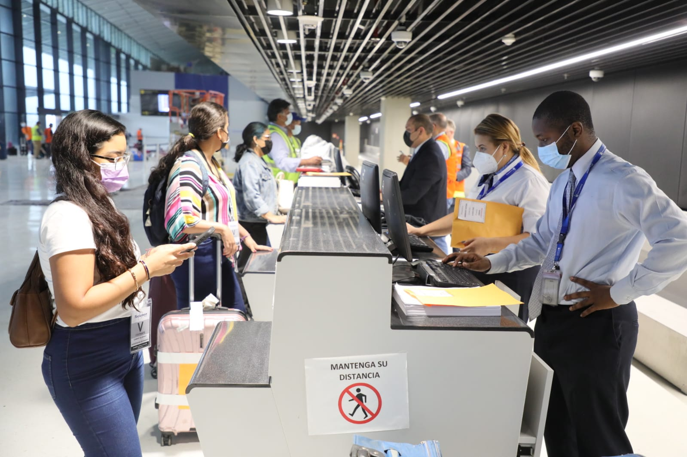

Conectividad aérea, fortaleza del 'hub' de las Américas
La nueva terminal se encuentra en un edificio moderno y vanguardista/Foto: Aeropuerto de Tocumen.
La posición geográfica de Panamá y las favorables condiciones climáticas hacen posible que el Aeropuerto Internacional de Tocumen funcione las 24 horas del día, los 365 días del año.
Con su terminal aérea Panamá brinda la oportunidad más directa de conectarse con el continente americano de una manera más rápida.
Con 75 años de historia desde la apertura de las primeras operaciones aeroportuarias, Tocumen es una de las más importantes terminales aéreas del continente americano, por número de destinos y tráfico.
De acuerdo con cifras de Tocumen S.A., antes de la pandemia operaban 23 aerolíneas comerciales, conectando a 85 destinos hacia 37 países alrededor del mundo.
Cuenta con una importante zona de carga y vuelos privados que puede ser usada como una pista alternativa en los momentos de alta demanda.
 Construcción de las primeras estructuras del Aeropuerto de Tocumen hace más de 70 años/Foto: Aeropuerto de Tocumen.
Construcción de las primeras estructuras del Aeropuerto de Tocumen hace más de 70 años/Foto: Aeropuerto de Tocumen.
Las líneas comerciales usan la pista que posee aproximadamente 3,050 metros de largo.
El 2022 es un año importante para el Aeropuerto Internacional de Tocumen, que pone en operación la Terminal 2, en un edificio con diseño vanguardista que aumenta la capacidad con 54 puertas de embarque y 12 posiciones remotas.
Esta expansión a la que apuesta Panamá como "hub de las Américas" aumenta la capacidad de movilizar hasta 21 millones de pasajeros.
 Pasajeros en la nueva y moderna Terminal 2/Foto: Aeropuerto de Tocumen.
Este aeropuerto es el más puntual de América Latina y el tercero del mundo, de acuerdo con el reporte mensual de desempeño realizado por la consultora especializada Cirium en la categoría de grandes aeropuertos en marzo de 2022.
“El análisis de Cirium se basa en un requisito de cobertura de vuelo del 80% para cada categoría. Un vuelo se considera puntual si la aeronave llega a la puerta de embarque dentro de los 14 minutos y 59 segundos (menos de 15 minutos) de la hora de llegada programada. Según Cirium, sus informes mensuales evalúan a las aerolíneas y aeropuertos en materia de puntualidad basado en más de 300 terabytes de información procedente de más de 2.000 fuentes”, informó Tocumen S.A.
Raffoul Arab, gerente general del Aeropuerto Internacional de Tocumen, dijo en un recorrido en las instalaciones de la T2, que se está brindando al país “una terminal de primer mundo”.
Por su parte, Pedro Heilbron, gerente general de Copa Airlines, la línea aérea de Panamá, indicó que la apertura de la T2 hace la diferencia. “Va a ser un gran impacto para el país, especialmente la llegada de más turistas y viajeros de negocios que se van a ver beneficiados y sobre todo se van a ver impactados, pienso yo, por una infraestructura tan moderna que nos coloca como un país atractivo en todos los sentidos”.
La consultora Cirium también galardonó a Copa Airlines como “la aerolínea más puntual de Latinoamérica” y está posicionada como la única aerolínea en el mundo en liderar una región por ocho años consecutivos.
Con su infraestructura moderna, Panamá busca también reforzar sus conexiones con otros continentes como Europa y Asia y ser un destino preferido para los turistas.
Un avión de Copa Airlines, la línea aérea de Panamá/Foto: Copa Airlines.